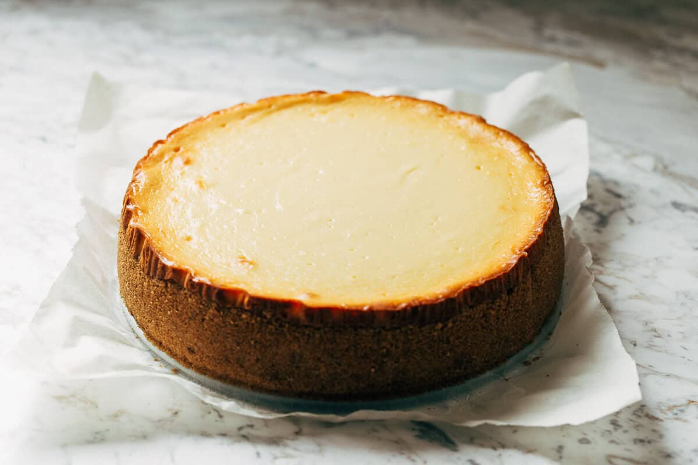

To make cheesecake, start by preparing the crust, usually made from crushed graham crackers mixed with melted butter and a little sugar, then press it firmly into the bottom of a springform pan. Next, beat cream cheese until smooth and creamy, adding sugar, eggs, and vanilla extract to create a rich filling. Pour the mixture over the crust and bake until the center is set but still slightly jiggly. Once baked, let the cheesecake cool completely, then refrigerate for several hours or overnight to allow the flavors to develop and the texture to firm up. Finally, top with fruit, chocolate, or whipped cream before serving for a deliciously indulgent dessert.